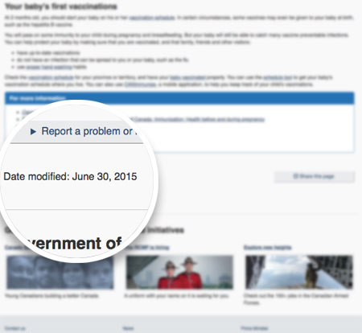
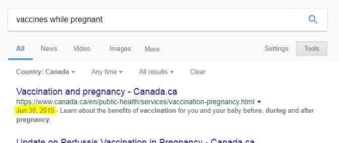
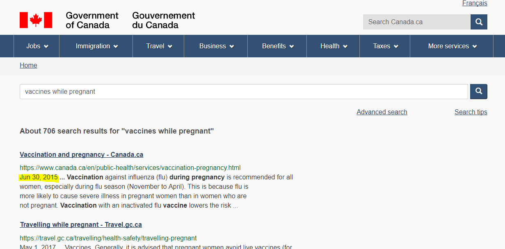

Trust and older content on Canada.ca
In a recent usability study, we saw people disregarding Canada.ca search results that seemed too old. However, the content was perfectly valid and had in fact just been reviewed. We can help show that content is still relevant by indicating when pages were last reviewed for accuracy.
You can see how old content is on Canada.ca
Currently, there are two main ways to tell how up to date content is on Canada.ca. One is in a standard place on each page:
(You'll see the date this post was published if you look near the bottom of this page.)
Since it's in the same place on every Canada.ca web page, people can count on finding it if they want to know how current the information is.
The second place people see the date is in search engine results. Both on Internet search engines:
...and on Canada.ca search:
In the design guidance for Canada.ca, we say that you should:
"Use the date modified component to provide a person with the date that the content was last updated."
But if there's no reason to update the content, that date won't change. It can start to look old even if it's still accurate.
Why content age matters
People really notice the age of the content presented, especially if it's a subject that can be out of date quickly. Health information definitely fits into that category. How recent the content is (also called it's "currency") is a key way people tell how credible it is.
What we heard when content seemed too old
In one test, Canadians tried to see if pregnant women can get the flu shot (they can and should!). Here's what happens when they see that content is from more than 2 years ago:
Participant 1: looking at search results for "pregnant flu vaccine" on desktop
“And, so this is from 2015, so I'll just scroll down a little bit to see if maybe… maybe from the past year.
I'll filter my results in case there's something more current.”
Participant 2: looking at search results for "flu pregnant" on their phone
“This information goes back to 2015. I wonder if there's anything that's newer than that.
Although that's still pretty current… I'd feel better if there was something a little newer.”
Participant 3: also looking at search results for "flu pregnant" on a phone
“Vaccination and pregnancy ok… but that's like from 2015. Where's the latest information?”
Even if the information is perfectly valid, people still thought there should be something newer.
Review content regularly to keep it up to date
We should be review content regularly as part of our content management lifecycle. How often you review depends on the content. Medical and scientific information is clearly should be reviewed more frequently.
It's entirely possible that a page you review may not need any updates. All of the information is still valid, and no changes are needed. It might then seem less trustworthy, even though the information is still as valid as when it was written.
If you reviewed the content and it's still valid, update the date modified
If you've done a full review of the content and decided it's still valid, then you can update the date modified to the date of the review. The date issued remains the same, but this provides a signal that the content has been assessed and is still current.
Don't update the date modified of pages just because you want to make them look new. Knowing the actual date something was modified or reviewed is important. It should only be done as part of a content lifecycle review process that has actually determined that the content is still valid.
We want to hear from you
Let us know what you think about optimization for Canada.ca. Email us at information@tbs-sct.gc.ca or tweet using the hashtag #Canadadotca.